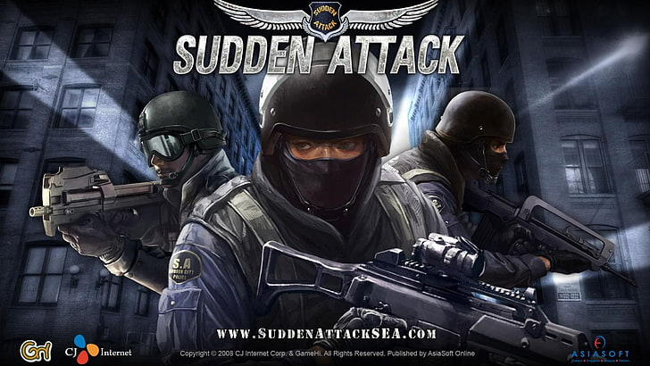

서튼어택 시놉시스
01. 쿠데타 그리고 내전
아프리카 중부의 삼비트 지역에 위치한 탄지리로 공화국은 과거 18~19세기 독일과 프랑스령 식민지였다.
그러나 이러한 환경은 아프리카내의 타 국가와 비교하여 매우 낮은 문맹률을 유지할 수 있엇고, 그들의 천연자원과
환경자원을 최대로 이용한 고도의 성장을 누릴 수 있었다.
2차대전을 거치며 그들의 식민지역사를 청산할 수 있게 되었으나, 낮은 문맹률이 이념간의
분쟁을 만드는 결과를 낳게 된다. 식민지에서 독립한 직후 아프리카의 이 작은 나라에 공산화의 열풍은 불어오게 됐다.
짧은 기간이었으나 매우 큰 피해를 남긴 내전은 UN군의 투입으로 막을 내리게 되었으나 이와 더불어 봉건주의왕정 역시
역사 속으로 사라지게 되었다.
02. 다양한 게임모드
폭파미션, 생존모드, 갓모드, 팀데스매치, 개인전, 협동플레이, AI Bot모드, 점령전, 어메이징, 스페셜미션, 술래잡기, 인질구출미션, 탈취미션, 터치다운, 타코매치, 1vs1, 출발서든어택 등 다양한 게임모드가 존재한다! 국내 인기 FPS 온라인 총 싸움 게임!
서든 게임 샷